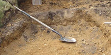
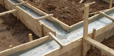
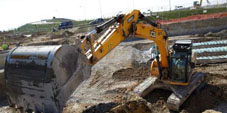
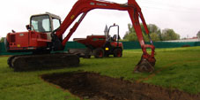
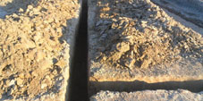
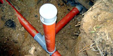

Земельные работы.
Началом практически любого капитального строительства служит проведение земляных работ. Земляные работы представляют собой комплекс мероприятий, связанных с переработкой грунта, то есть его разработкой, перемещением, укладкой, а также уплотнением с целью последующей закладки фундамента. Для того, чтобы снизить трудовые и материальные затраты при проведении земляных работ, при разработке проектов планируемых к строительству сооружений, всегда учитываются существующий рельеф местности в которой они будут построены.
К земляным работам относятся отрывка траншей и котлованов, перемещение грунта, возведение насыпей, уплотнение грунта, обратная засыпка котлованов и траншей после устройства фундаментов и укладки труб, планирование поверхности и прочее.

На сегодняшний день большинство видов земляных работ выполняется механическим способом с применением специализированной техники и современных технологий. Также используется и ручной труд. Полностью от него отказаться не представляется возможным по причине того, что на некоторых объектах присутствуют труднодоступные места, куда не может пройти техника. При незначительных же объемах работ привлекать спецтехнику тоже не всегда бывает целесообразно.

Помимо этого, в некоторых случаях применяются гидравлический или взрывной способы разработки грунта. При гидравлическом способе струей воды размывается подошва забоя, что вызывает обрушения грунта. Некоторые же скальные породы разрабатывают в большинстве случаев исключительно взрывным способом.Свойства грунтов оказывают существенное влияние на трудоёмкость земляных работ, характер их разработки, а также выбор необходимой для этого спецтехники. В связи с этим при выборе конкретного типа машины для земляных работ необходимо учитывать свойства и состояние разрабатываемых грунтов.
Временной график и стоимость проведения земляных работ напрямую зависят от времени года и погодных условий. Приступать к строительству домов в зимнее время абсолютно ни к чему. Ведь когда земля промерзлая, разрабатывать котлованы и делать насыпи намного сложнее. По этой причине самым оптимальным временем для производства земляных работ является весна или лето (в зависимости от географического расположения района строительства). Как мы и указывали выше, всё будет зависеть от состояния почвы земельного участка отведенного под строительство.

При выполнении земляных работ механическим способом используют землеройные и землеройно-транспортные машины. Землеройные машины осуществляют резку грунта и его перемещение на небольшие расстояния с выгрузкой на транспортные средства или в отвал. К этим машинам относятся различные типы экскаваторов.
Вследствие своей универсальности и очень хорошей маневренности наибольшее применение в строительстве получили одноковшовые экскаваторы. Вместимость их ковшей в большинстве случаев может варьироваться от 0,15 до 2 кубических метров.
Отдельно следует отметить, что строительство на слабых грунтах требует их закрепления. Закрепление может быть постоянным или временным. Для постоянного закрепления грунтов достаточно часто применяют их цементацию, полимеризацию, силикатизацию, битумизацию и некоторые другие методы. Постоянное закрепление грунтов весьма широко используют при реконструкции зданий, а также реставрации памятников архитектуры.
Устройство траншей и котлованов в водонасыщенных грунтах проводится с удалением из них грунтовых и поверхностных вод. Для этого используют искусственное водопонижение или открытый водоотлив. Открытый водоотлив предусматривает откачку воды, поступающей в траншею или котлован при помощи насосов. Однако при применении такого способа в выемке постоянно будет присутствовать вода, что будет в значительной степени усложнять производство работ и снижать устойчивость стенок выемки из-за разжижения грунта. Сущность искусственного понижения уровня грунтовых вод состоит в постоянной откачке воды из специально пробуренных скважин, располагаемых рядом с местом ведения работ.

Котлованы, траншеи, а также другие сооружения, получаемые в результате земляных работ, должны быть надежными, устойчивыми и прочными. Это обеспечивается путем
равномерного послойного распределения и уплотнения грунта. Толщину слоя в зависимости от вида грунта, требуемой степени его уплотнения, а также массы уплотняющих машин принимают в основном от 150 до 800 мм. Уплотнение грунта в основном начинают сразу же после его укладки и разравнивания.

Механическая прочность грунта резко возрастает по мере его замерзания, что приводит к значительному увеличению затрат времени и труда на его разработку. Это в свою очередь ведет к удорожанию стоимости выполнения работ. В связи с этим при необходимости выполнения земляных работ в зимний период принимаются меры по предохранению грунта от промерзания. Разработку же его начинают проводить только после оттаивания или рыхления.

Земляные работы разрешается выполнять только при наличии согласованного и утвержденного проекта производства работ. До начала проведения земляных работ должно быть точно определено расположение действующих подземных коммуникаций. Разработку грунта вблизи подземных коммуникаций разрешается производить только после получения письменного разрешения организаций, ответственных за их эксплуатацию. Около силовых электрических кабелей разрабатывать грунт с применением ударных инструментов вообще запрещается. В случае обнаружения не указанных в проекте подземных сооружений, а также при выделении вредных газов, все земляные работы должны быть немедленно прекращены до получения дополнительных указаний.